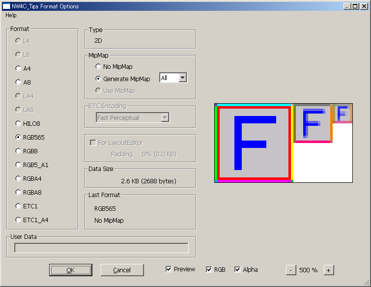

The TGA plug-in saves and loads Targa (TGA) files appended with additional information used for NintendoWare. The additional information includes the format, number of mipmap levels, and texture data. It is included in the intermediate file when it is output from the 3D CG tool.
To save a TGA file that includes additional information for NintendoWare, select File > Save as and set the file format to NW4C_Tga.
Click Save. A dialog box is displayed.

Type displays either 2D, if it is a 2D texture, or Cube Map.
Data Size shows the size of the texture data used when saving in the selected format.
Last Format shows the format when the NW4C_Tga file was last saved.
Set the appropriate options and then click OK to complete the save process.
Sets the texture format.
The format appropriate for the current state of the file is selected by default.
If the file was ever saved as a NW4C_Tga file, the default selected format is the format that was set the previous time the file was saved, as long as it is still possible to save the file in that format.
If the color depth filter has been applied to the image, the default selected format is the format that was specified when the filter was applied. If an ETC filter was applied, the default selected format is either ETC1 or ETC1_A4.
Each format can be selected under the following conditions.
| Format Name | Conditions Allowing Selection |
| L4 L8 LA4 LA8 |
Always selectable if the image mode is Grayscale. If the image mode is not Grayscale, these formats can be selected if the color components all have the same value in the image (R = G = B). |
| A4 A8 HILO8 RGB565 RGB5_A1 RGBA4 RGBA8 |
Always selectable. |
| RGB8 | Selectable as long as it is not a cube map. |
| ETC1 | Selectable if both the height and width are 16 or more, and if the ETC filter is not applied if there is an alpha component. (In the case of a mipmap image, this condition is determined using the width and height of the smallest size level.) |
| ETC1_A4 | Selectable if the ETC filter is not applied if there is no alpha component. |
Select No MipMap if no mipmap will be used.
Select Generate MipMap and specify a number of levels to automatically generate mipmap data and export it as additional information. Set the number of levels to All to generate the maximum number of levels possible for an image of the specified size. If Format is set to ETC1, you cannot select so many levels that one mipmap image will have a width and height of less than 16. Images are compressed using bilinear compression.
If a mipmap image has been created using the Mipmap Creation plug-in, the Use MipMap option is selected automatically. (You cannot select No MipMap or Generate MipMap.)
You cannot change this option unless you modify the image after applying the ETC filter.
If the For LayoutEditor option is selected, you cannot select Generate MipMap.
Specifies which compression method to use when the format is set to either ETC1 or ETC1_A4.
This option cannot be changed unless you manually apply the ETC filter.
Fast, Medium, and Slow indicate the compression-calculation speed. A slower calculation speed can improve image quality.
Options that contain the word Perceptual are compression methods that calculate the G color component with less error. (Humans perceive green better than other colors). If you are working with textures for normal maps, we recommend using a method marked as Perceptual.
Regardless of the compression method selected, the amount of data after compression is the same.
Select this option to save the file as a TGA file for NW4C LayoutEditor.
If the size of the image width or height is not a power of two of 8 or larger and you select this option, the pixel color at the right edge or the bottom edge will be stretched out so that data that is a power of two of 8 or larger will be exported in the additional information.
Padding shows the amount of texture data being padded in this stretched-out region as a percentage of the total texture data.
You cannot select this option if the image width and height are both powers of two of 8 or larger, or if it is a mipmap image, or if it is an image to which the ETC filter was applied and has not been modified since.
This option cannot be cleared if the image width or height is not a power of two of 8 or larger, or if it is not the size of a cube map.
If you use a 3D CG tool on a TGA file for NW4C LayoutEditor, an error is generated when you try to export the intermediate file.
If you clear this option and save the TGA file, NW4C LayoutEditor will still be able to use the file. However, cube maps cannot be used.
(This option is not currently being used.)
This field is for entering string-type user data. User data can be used freely by any game. User data is not output if nothing is input.
Select Preview in the dialog box to preview the image. Use the preview to check how a texture saved with the current options will appear when displayed on the retail system. The image's picture quality will not change in Photoshop even if it is saved.
Use the RGB and Alpha check boxes to switch between RGB and alpha display. If both check boxes are selected, the closer the alpha value is to zero, the redder the preview will appear.
To zoom in or out on the preview image, click the + and - buttons or use the mouse wheel.
To load a TGA file that includes additional information for NintendoWare, select File > Open, and then click Open.
You can also load the TGA file by dragging it to the Photoshop window.
Files that have an image mode other than grayscale, index color, or RGB color, and files that use 16 bits per channel cannot be saved using NW4C_Tga.
The size for both the image height and width must be a power of two between 8 and 1024.
However, if it is a texture for use with NW4C LayoutEditor, you can save the image even if it is not this size by selecting the For LayoutEditor option.
If you are going to create mipmap images on Photoshop, see the description for the Mipmap Creation plug-in.
If you are going to use cube maps, see Creating Cube Maps.
For the ETC1 format, the smaller of the height and width must be at least 16 pixels in size.
For mipmap images, this size restriction must be satisfied for every mipmap level.
You can select the ETC1 format even if this size restriction is not satisfied, but a warning message appears when you click OK, and you cannot proceed.
If there are two or more alpha channels, the only alpha channel saved is the one at the top of the list in the Channel window. The other alpha channels will no longer be there the next time the file is loaded.
If the image mode is Grayscale and the format is A8, the gray channel is saved as the alpha if there is a background but no alpha channel.
If the image mode is Index Color, the alpha of transparent parts is saved as 0 if there is a transparent color set in the color table and there is no alpha channel.
In Photoshop, the brightness of the alpha channel changes depending on the Color Setting. However, for NW4C_Tga, an 8-bit K value is saved as the alpha regardless of the color setting. (This value is 255 for K = 0%, 128 for K = 50%, and 0 for K = 100%. In Photoshop, K values are maintained as 8-bit values.)
Layer information cannot be saved using NW4C_Tga. If an image that has more than one layer is saved as TW4C_Tga, all layers are flattened the next time it is loaded.
For images with no background and only layers, the pixel opacity when all layers are merged is saved as the alpha if there is no alpha channel.
If a file was ever saved as a NW4C_Tga file, when you select Save from the File menu to overwrite the file, it will be saved in the same format as the previous time it was saved, without showing a dialog box, as long as it is still possible to save the file in that format.
If you want the dialog box to appear, select File > Save as.
The dialog box is displayed even if Save is selected if it is no longer possible to save in the same format that was used for the last save. A change in size is one reason this can happen. Note that the format suitable for the file is selected as the default format at this time.
The same image quality is retained on Photoshop no matter what format is used to save the data. For example, even if the image file is saved in RGBA4 format, the color depth of the alpha channel is not forced to 4 bits, but rather maintained at 8 bits.
If you want the image quality in Photoshop to display the same as it would on the retail system, use the Color Depth Filter plug-In and the ETC Filter plug-In.
In Photoshop, the grayscale and alpha channel brightness changes depending on the Color Setting. However, for NW4C_Tga, an 8-bit K value is saved as the intensity (alpha) regardless of the color setting. (This value is 255 for K = 0%, 128 for K = 50%, and 0 for K = 100%. In Photoshop, K values are maintained as 8-bit values.)
TGA files saved as NW4C_Tga do not have information about the color setting.
If the color setting is set as shown below, the grayscale and alpha channel brightness in Photoshop is almost directly proportional to the K value.
(Show More Options)
RGB: sRGB IEC61966-2.1
Gray: sGray
Use Dither: OFF
CONFIDENTIAL